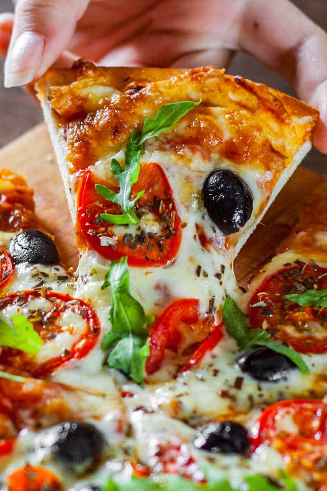

Ingredients
Pizza Dough:
- Almond Flour
- Mozzarela Cheese’
- Cream Cheese
- Eggs
- Olive Oil
Tomato Pizza Sauce:
- Keto Pizza Sauce
- Toppings of Choice
Description
No grains and no butter is needed, but you’d never tell. The texture is slightly thick, chewy, but with a lighter crumb. It tastes like any good pizza crust, with no almond flavor.
Recipe credits:
Steps
- Start by sifting the almond flour to ensure there are no clumps.
- Next, In a microwave safe bowl, combine your mozzarella cheese and cream cheese and microwave in 20-second spurts until cheeses have mostly melted. Whisk them together, then add the almond flour on top. Add the eggs and mix very well until a sticky dough remains.
- Now, place the ball of dough onto a flat surface lined with parchment paper. Place another piece of parchment paper over it and, using a rolling pin, roll out the dough until it is around half an inch in thickness. Use your hands to smooth and even out the sides until you are left with a pizza shaped dough.
- Finally, place the dough onto a lightly greased pizza pan or baking sheet. Pre-bake the dough for 10 minutes. Lightly brush olive oil around the exterior of the pizza dough, before adding the sauce and toppings. Place back into the oven for 10 minutes until the crust is golden, and the cheese has melted.
Notes
Nutrition
- Serving: 1serving | Calories: 195kcal | Carbohydrates: 6g | Protein: 10g | Fat: 17g | Sodium: 254mg | Potassium: 23mg | Fiber: 4g | Vitamin A: 95IU | Vitamin C: 1mg | Calcium: 102mg | Iron: 2mg | NET CARBS: 2g